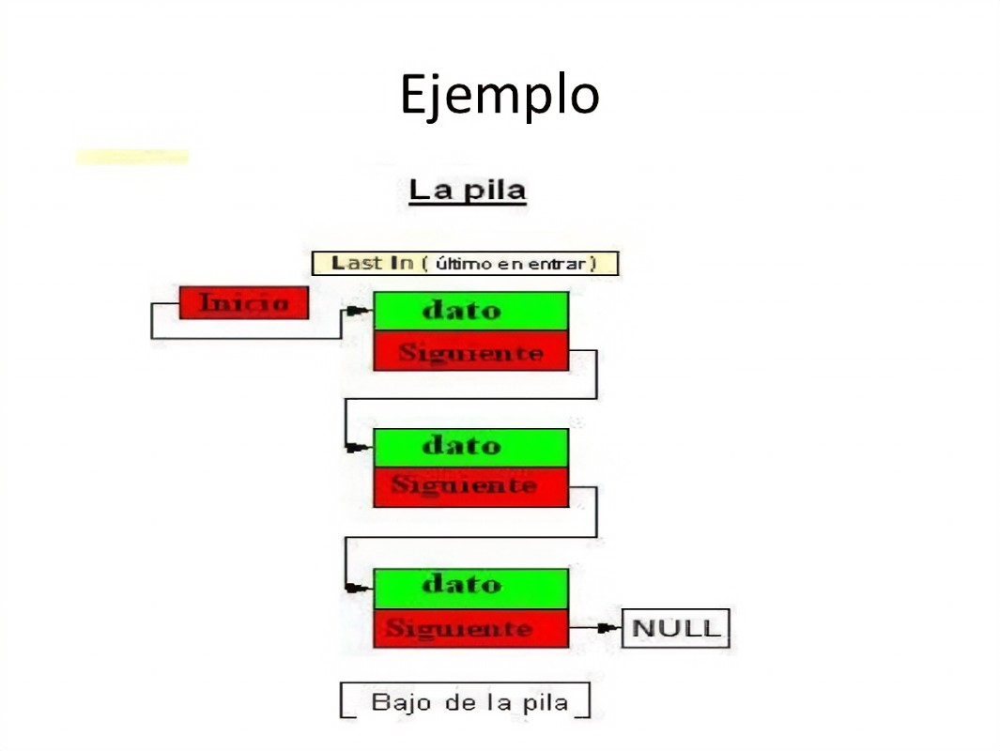
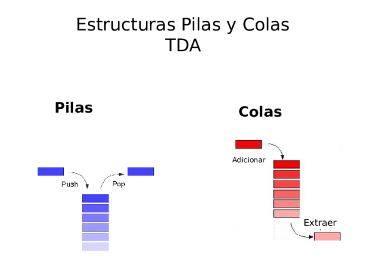
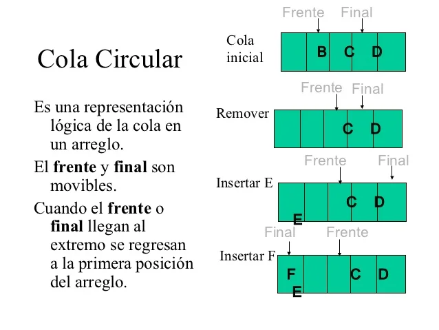

<!DOCTYPE html>
<html lang="en">
<head>
    <meta charset="UTF-8">
    <meta name="viewport" content="width=device-width, initial-scale=1.0">
    <title>Pilas_y_Colas</title>
</head>
<body>
    
</body>
</html>

<div>
    <p class="h6">Las pilas y colas son estructuras de datos en programación. Una pila sigue el principio de LIFO (Last In, First Out), lo que significa que el último elemento añadido es el primero en ser retirado. Por otro lado, una cola sigue el principio FIFO (First In, First Out), donde el primer elemento añadido es el primero en ser retirado. Ambas estructuras son utilizadas para organizar y gestionar datos de manera eficiente en diferentes situaciones de programación</p>
    <p class="h6">En estructuras y organización de datos, las pilas y colas son tipos de estructuras de datos que ayudan a organizar y manipular la información de manera específica:</p>
    <div class="w-25">
        
    </div>
    <p class="h6"> <ul>
        <li>1. *Pilas (Stacks):*</li>
        - *Definición:* Una pila es una estructura de datos que sigue el principio de LIFO (Last In, First Out). El último elemento que se añade es el primero en ser retirado.
        - *Uso común:* Se utiliza para gestionar operaciones de llamadas a funciones, manejo de memoria temporal, y para deshacer operaciones en editores de texto o software.
     
        <li>2. *Colas (Queues):*</li>
        - *Definición:* Una cola es una estructura de datos que sigue el principio de FIFO (First In, First Out). El primer elemento que se añade es el primero en ser retirado.
        - *Uso común:* Se emplea en situaciones donde se necesita procesar elementos en el orden en que llegaron, como la gestión de tareas en un sistema operativo, impresión en una impresora, o la planificación de procesos.
     
        <li>Ambas estructuras son fundamentales en la programación y son utilizadas para resolver problemas específicos de manera eficiente, permitiendo un acceso y manipulación de datos más controlado y organizado.</p></li>
    </ul>
  </div>
            <h6 class="card-subtitle mb-2 text-body-secondary">Imagenes</h6>
            <div id="carouselExampleControls" class="carousel slide" data-bs-ride="carousel">
              <div class="carousel-inner">
                <div class="carousel-item active" data-bs-interval="3000">
                  
                </div>
  
                <div class="carousel-item" data-bs-interval="3000">
                  
                </div>
  
                <div class="carousel-item" data-bs-interval="3000">
                  
                </div>
  
              </div>
              <button class="carousel-control-prev" type="button" data-bs-target="#carouselExampleControls" data-bs-slide="prev">
                <span class="carousel-control-prev-icon" aria-hidden="true"></span>
                <span class="visually-hidden">anterior</span>
              </button>
              <button class="carousel-control-next" type="button" data-bs-target="#carouselExampleControls" data-bs-slide="next">
                <span class="carousel-control-next-icon" aria-hidden="true"></span>
                <span class="visually-hidden">siguiente</span>
              </button>
            </div>
            <p class="card-text">En conclusión, las pilas y colas son estructuras de datos esenciales en programación y organización de datos. Las pilas siguen el principio LIFO, mientras que las colas siguen el principio FIFO. Estas estructuras ofrecen formas eficientes de organizar, gestionar y manipular datos en diversas aplicaciones, desde el manejo de llamadas a funciones hasta la planificación de tareas. Su comprensión y aplicación adecuada son fundamentales para el desarrollo de algoritmos eficientes y la optimización de procesos en la programación de software.</p>
            
          </div>
        </div>
    </body>
  </html>